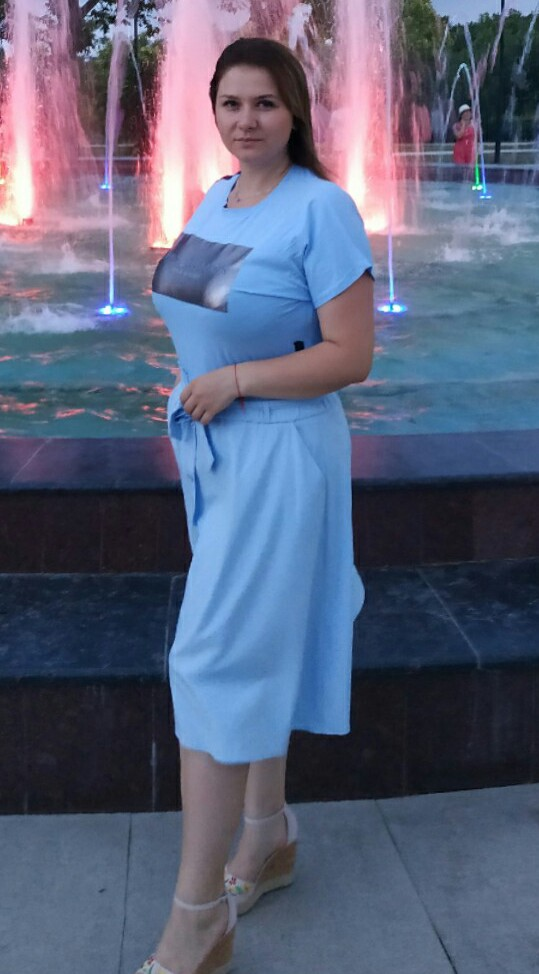

Моё портфолио.
Образование- Высшее, Севастопольский городской гуманитарный университет, 2014г.
Специальность – филология.
Общий стаж - 2 года 10 мес.
Стаж педагогической работы – 2 года 10 мес.
Квалификационная категория - специалист.
Ученая степень, почётные звания, награды.
Прохождение курсовой переподготовки:
-курсы Государственного бюджетного образовательного учреждения дополнительного профессионального образования Республики Крым «Крымский республиканский институт постдипломного педагогического образования» по программе: «Организационно-методическое и ресурсное обеспечение реализации ФГОС НОО обучающихся с ОВЗ и обучающихся с умственной отсталостью (интеллектуальными нарушениями)» (рег.№660 РК0000030154, 2019г., 18ч.)
-курсы Государственного бюджетного образовательного учреждения дополнительного профессионального образования Республики Крым «Крымский республиканский институт постдипломного педагогического образования» по программе: «Формирование предметных и метапредметных компетенций обучающихся в процессе преподавания русского языка и литературы» (рег.№2586 РК0000041420, 2020г., 72 ч.)
e-mail:natali-ls2016@mail.ru
Мои достижения.
Муниципальный этап Малой академии наук школьников Крыма «Искатель» (МАН «Искатель») в 2019/2020 учебном году 2-ое место в секции «Русская литература» заняла Кельмамбетова Фатиме Зайнединовна, руководитель Сачьян Наталья Сергеевна (УОМС- приказ от 20.12.2020г. №541/01-03)
Муниципальный этап республиканского конкурса исследовательских работ и проектов учащихся среднего школьного возраста «Шаг в науку» среди обучающихся района в 2020г. 1-ое место заняла Колодьянова Анна Юрьевна, руководитель Сачьян Наталья Сергеевна (приказ от 27.04.2020 № 163/01-03)